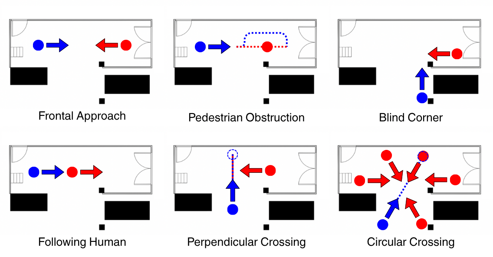

- Wide range of social navigation scenarios with both individual and group interactions.
- Over 192 minutes of interaction data and over 172 minutes of annotated trajectories.
- Over XXX individualy annotated tracks.
- Sensory data from the perspective 2 different robots (Toyota HSR and Clearpath Jackal).
- Stationary groundtruth recording station (grs) with video camera and 3D LiDAR scans.
- Occupancy grid of the obstacles in the environment.
- Recording of both social and non-social behavior of the robots.
Overview
Experimental Setup
Environment

The dataset was recorded in a broad garage space measuring 3.9 m × 10.7 m with a lateral opening making it possible to elicit tracks in a straight line or around corners. The environment is equipped with a ground truth recording station (grs) that includes a video recorder and a 3D LiDAR scanner. For each scene goal positions were placed around the map acording to different social navigation scenarios.
Groundtruth recording station (grs)

The Ground Truth Recording Station (GRS) is equipped with an Intel® RealSense™ Depth Camera D455 and a Robosense RS-LiDAR-16 3D LiDAR. Both sensors are mounted on a custom 3D-printed frame, which is positioned on a tripod for stable data collection. You can interact with the structure in the 3D viewport above (click and drag to rotate) or access the 3D model here.
To minimize occlusions, the GRS was positioned at a height of 2.17 m above the ground. To enhance the resolution of the LiDAR data, the GRS was tilted 15° downward toward the area of interest.
Robots

The robots used in the NavWareSet dataset are the Clearpath Jackal and the Toyota HSR. The Jackal is a small, rugged robot designed for outdoor and indoor environments, equipped with a 3D LiDAR sensor and an RGB-D camera. The HSR is a versatile human-support robot capable of performing household tasks, featuring a manipulator arm, a mobile base, and various sensors for safe and intelligent interaction with people and objects. In most scenarios both robots were teleoperated by a human operator, first in a socially aware manner, and then in a non-aware manner.
Experiment description

The experiment was designed to capture common social navigation scenarios. These scenarios were proposed by Francis et al. in their paper, Principles and Guidelines for Evaluating Social Robot Navigation Algorithms. They serve not only to facilitate data collection but also to provide a standardized basis for evaluating the performance of social navigation algorithms. A detailed description of the scenarios used in NavWareSet is provided in the table below.
In total 17 participants were asigned numbers and divided in 2 groups of 5 and 5 pairs. Each group performed all scenarios but the object handover scenario. All scenarios were recorded for 4 minutes. Most scenarios were performed with both robots, except for the object handover scenario which was only performed with the Toyota HSR. Most scenarios were recorded twice, once with the robot navigating in a socially compliant manner and once in a non-compliant manner. A detailed description of all recorded scenes used in NavWareSet is provided in the table below.
Data Pipeline
The robots used in the NavWareSet dataset are the Clearpath Jackal and the Toyota HSR. The Jackal is a small, rugged robot designed for outdoor and indoor environments, equipped with a 3D LiDAR sensor and an RGB-D camera. The HSR is a versatile human-support robot capable of performing household tasks, featuring a manipulator arm, a mobile base, and various sensors for safe and intelligent interaction with people and objects. In most scenarios both robots were teleoperated by a human operator, first in a socially aware manner, and then in a non-aware manner.
Data Overview
BibTeX
BibTex Code Here